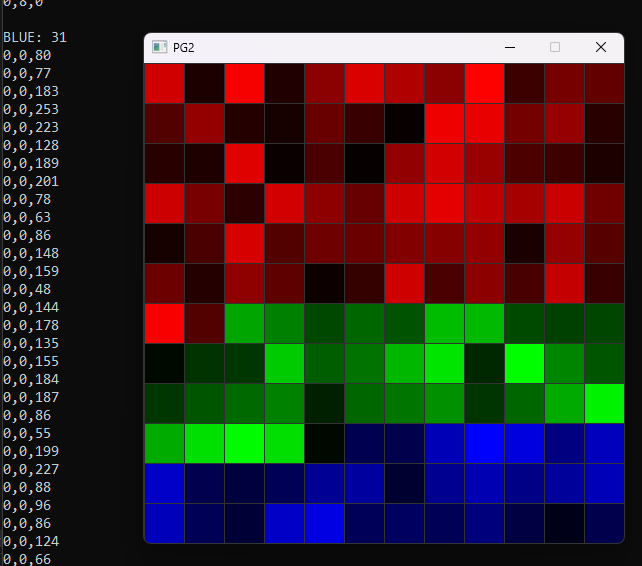
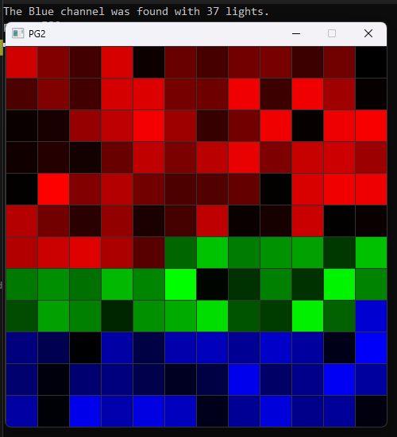

📘 Day 05 Lecture Practices
💻 Search
🧩 Part B-1: Linear Search
- Open
Searcher.hand add a method declaration calledLinearSearch. The method should search a vector ofLightobjects for a specific value of the green channel.
NOTE: open the Light.h file to see the declaration of the Light structure.
- Open
Searcher.cppand write a definition of theLinearSearchmethod.- Linearly search the vector.
- Compare the green channel of each object with the green parameter.
- If the values match, return the index of the light.
- If no match is found, return -1 which indicates that the color was not found.
- Open
Day5.cpp. - In the
Day5::PartB_1()method, find theTODOcomment and call yourLinearSearchmethod before the if block. Assign the returned index to thefoundIndexvariable.
🎯 Result

💻 Maps
🧩 Part B-2.1: Fill the Map
- Open
Day5.cpp. - In the
Day5::PartB_2method, find the commentTODO: Part B-2.1 fill the std::map. After the comment...- Loop over the
allLightsvector.- Create a temporary
ColorChannelvariable. - Check each light.
- If the red channel is greater than the blue and green channels, set the
ColorChannelvariable toRED. - If the blue channel is greater than the red and green channels, set the
ColorChannelvariable toBLUE. - If the green channel is greater than the red and blue channels, set the
ColorChannelvariable toGREEN. - Call the
groupedColorsmap's find method with theColorChannelvariable.- If the iterator that is returned equals the
groupedColors' end, then the key is not in the map then...- Create a new vector with the light.
- Add the vector to the
groupedColorsmap for theColorChannel.
- Else the key is already in the map. Then...
- Add the light to the vector for the key.
- If the iterator that is returned equals the
- Create a temporary
- Loop over the
NOTE: the first on the iterator is the key (ColorChannel) and the second on the iterator is the value (vector of lights)
🧩 Part B-2.2: Loop over the Map
- Open
Day5.cpp. - In the
Day5::PartB_2method, find the commentTODO: Part B-2.2 loop over the std::map. After the comment... - Loop over the
groupedColorsmap. In the loop for each light...- If the color channel is
RED, print "RED" and the size of its vector. - If the color channel is
BLUE, print "BLUE" and the size of its vector. - If the color channel is
GREEN, print "GREEN" and the size of its vector. - Call the
grouper.DrawLightsmethod.
- If the color channel is
Example:
// the vectorOfLights comes from the map
grouper.DrawLights(screenMap, vectorOfLights, columnRange, column, row); 🎯 Result

🧩 Part B-3: Find in Maps
- Open
Day5.cpp. - In the
Day5::PartB_2method, find the commentTODO: Part B-3 call std::map's find method. After the comment... - Call the
groupedColorsfind method to try to find theBLUEColorChannel. - If the
BLUEchannel is not found, then print to the console that the channel could not be found. - Else print to the console that the Blue channel was found and print how many lights are in its vector.
🎯 Result


🧠 Lecture Practices
Here are the lecture Practices...
🔍 Lecture Quizzes
Here are the lecture quizzes...